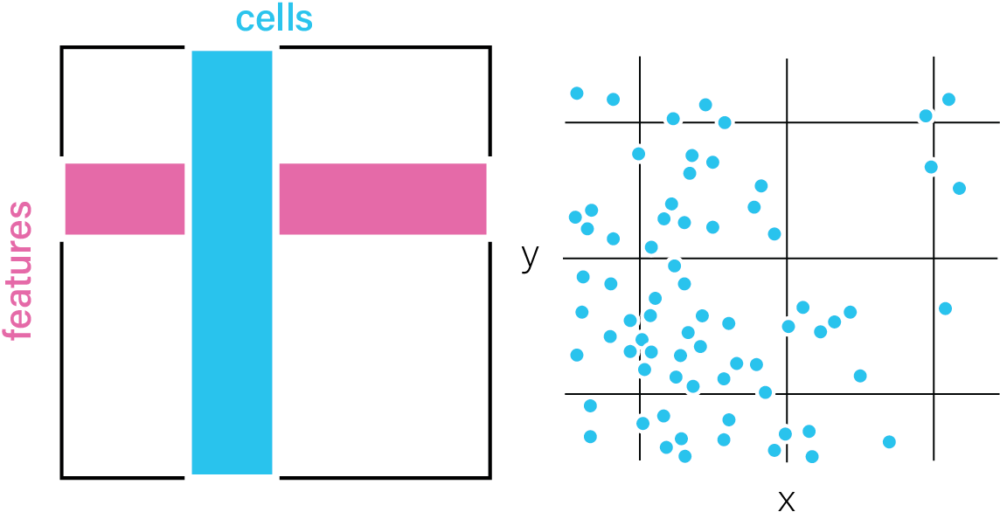
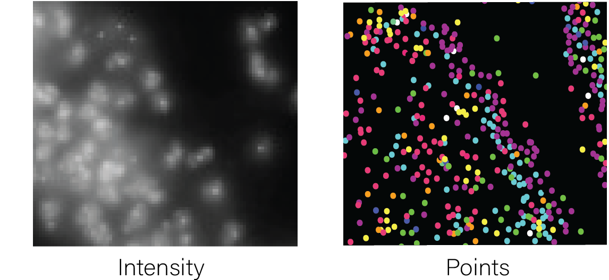
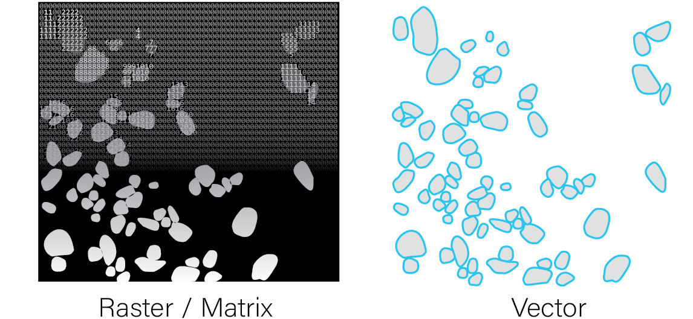

Spatial Omic Datatypes
Spatial omics data can be provided either as aggregated data or raw features information.
Aggregated Data
Feature information that has been calculated for a particular set of
spatial locations.
These are commonly presented as an expression
matrix paired with a set of xy(z) coordinates in tabular or matrix
format.

Raw Features
Feature information about the tissue that has not been aggregated. These
features can be paired with a spatial unit to enable aggregate
data-based analyses.
Raw features can include molecule detections
with an ID and xy(z) coordinates in tabular format (e.g., transcripts),
or a matrix of intensity values, typically in image format.

Spatial Unit
Spatial units provide functional context to raw features, allowing them
to be aggregated and treated as units of study. These can be artificial
(e.g., spatial bins), biological (e.g., cell or nuclear segmentations),
or technical (e.g., arrays of spots reflecting the assay’s
construction).
Annotations can either be provided as 2D raster
image/matrix-like format where the integer values of matrix cells or
raster pixels both identify and define the region covered by each
annotation, or as a vector-type format where the vertices of the
polygons are provided.

Raw features and spatial units can be combined to generate aggregated datasets, but the reverse transformation is generally not possible.
See also: feature aggregation
Creating a Spatial-Omics Giotto Analysis Object
Giotto Suite can work with any of the above types of spatial omic
data, and has the flexibility to handle multiple of these modalities
when the data is available. See the following for instructions on
setting up a custom giotto object with the respective input
data.
Convenience functions for specific platforms
There are also several convenience functions we provide for loading in data from popular platforms. These functions take care of reading the expected output folder structures, auto-detecting where needed data items are, formatting items for ingestion, then object creation. These technologies also have expanded tutorials under the examples tab.
createGiottoVisiumObject()
createGiottoVisiumHDObject()
createGiottoXeniumObject()
createGiottoCosMxObject()Customizing the Giotto Object
By providing values to other createGiottoObject() or
createGiottoObjectSubcellular() parameters, it is possible
to add:
- Cell or feature (gene) metadata: see addCellMetadata and addFeatMetadata
- Spatial networks or grids: see Visualizations
- Dimension reduction: see Clustering
- Images: see createGiottoLargeImage
- giottoInstructions: see Create and change Giotto instructions
For a more in-depth look at the giotto object structure,
take a look at the introduction to giotto
classes